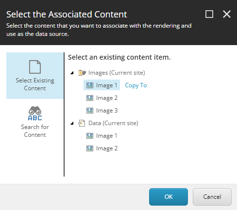

Create and change a partial design
Use partial designs for consistent styling of pages.
SXA uses sets of renderings, called partial designs that make up a webpage. You can use the partial designs to create the design elements of your pages quickly for a consistent style. For example, you can create parts of your page once, such as headers and footers, and then use them everywhere on your site.
You can also change a partial design for a specific page, for example, if you need a slightly different header on a particular page. Partial designs can inherit from each other, so you can build increasingly complex designs from a basic set of reusable partial designs.
If the existing partial designs do not suit your needs, you can create a new partial design to reuse across pages, for example, a partial design for a page header.
To add a partial design in the Experience Editor:
On the ribbon, on the Experience Accelerator tab, click Partial Design, and then click Insert a new Partial Design.
In the Insert Item dialog box, select Partial Design, enter a name and click OK. SXA now loads an empty page. If you select the navigation check box, you can see you are in the presentation layer.

Now you can add renderings to your partial design by dragging them from the Toolbox to the page. For example, for a header, you could add some layout elements and divide the header in 4 columns on the left and 8 on the right. Drag the Column Splitter rendering to the page and split the layout.
Use the Image rendering to add a logo to the left 4 columns. To do that, drag the Image rendering to the left columns.
In the Select the Associated Content dialog, select the image and click OK.
Note
If you select a data source under the Data node, it will be a local data source that is stored as a subitem of the page item. Any changes you make to local data sources will only affect the page you are working on. If you want to be able to reuse the data source and manage it globally, select a different place in the tree.
When your header is ready after, for example, adding a slogan to the header, and adding navigation, save it to make it available in the Partial Design menu.
Two slightly different headers. There is no need to create a number of redundant Partial Designs. By taking advantage of Partials inheritance, you can create one Base Partial Design with - for example - Navigation Component, and then create other Partials on the top of that one and fill in the differences with different logos, and so on. This way you avoid the creation of numerous templates with only minor differences. With Partials inheritance, you can maintain the shared aspects of your design in one place and easily propagate those changes to all the different page types that the authors are creating.
Occasionally, you might want to change a partial design. For example, you might need to update it because the address in the footer has changed or because you want to add a slogan to the header.
Note
When you change a partial design, the changes are updated on every page that uses this partial design. Therefore, you should make sure that you check where it is used before you change it.
To change a partial design in the Experience Editor:
On the ribbon, on the Experience Accelerator tab, click Partial Design.
Select the partial design that you want to change.
Make the changes by for example changing the text or adding renderings from the Toolbox to the partial design.
On the main ribbon, click Save. Now the partial design has changed for every page that uses it.